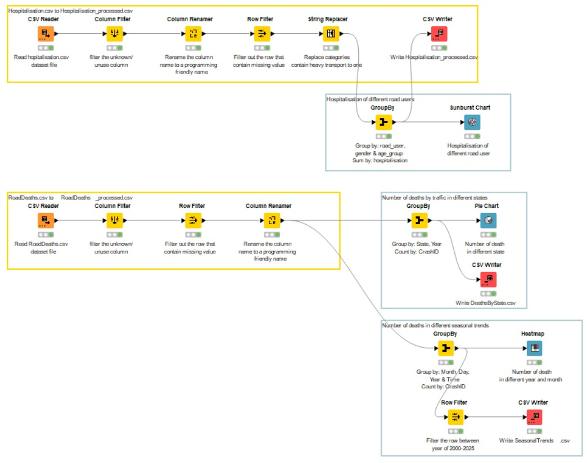
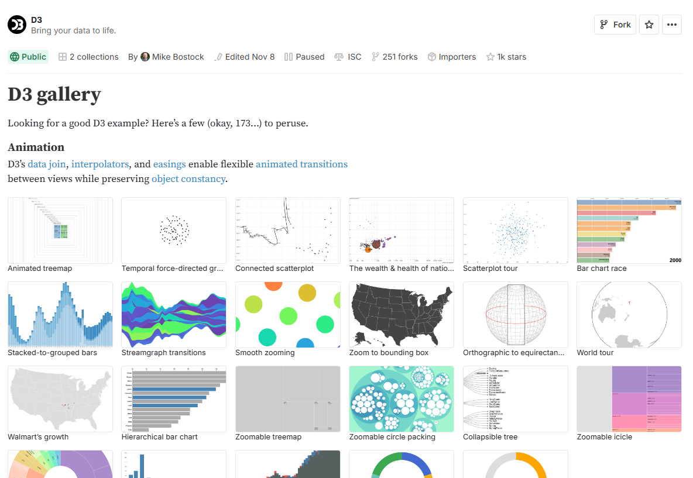

Website Overview
This website is developed to provide the public with clear, accessible insights into road safety trends across Australia. This platform presents official data on road fatalities and injuries through interactive charts and maps, allowing users to explore patterns by location, age, gender, and vehicle type. By making this information easily understandable, the website aims to promote transparency, raise awareness of key risk factors, and support evidence-based initiatives to improve road safety nationwide.
Number of Fatalities by States in Australia
This interactive heatmap visualizes the number of road fatalities across Australian states in Australia. The color intensity of each state represents the number of fatalities, with darker shades indicating higher counts, allowing you to quickly identify regions with elevated road safety risks.
How to use: Hover over a state to see detailed fatality numbers for that location. Click on any state to highlight it and the corresponding range on the legend, helping you compare the severity relative to other states. Use the year slider above the map to filter the data and observe changes over time. This interactivity allows you to explore trends geographically and temporally for better insights into regional road safety patterns. The play button allows you to go though an animation of the fatalities through the years.
Number of Hospitalisations by Road Users in Australia
This interactive sunburst chart visualizes the distribution of road-related hospitalizations across different road user categories in Australia from 2011 to 2021. The hierarchical structure allows you to explore patterns by gender and age groups, revealing which demographics are most affected by road incidents requiring hospitalization.
How to use: Click on any segment to zoom in and explore that category in detail. Click the center to zoom back out. Hover over segments to see detailed hospitalization numbers. Use the filters below to add demographic breakdowns to your analysis.
Filters:
Seasonal Trends Dashboard
This interactive dashboard provides a multi-layered view of road-related incidents in Australia, enabling users to explore how incident patterns change across years, months, days of the week, and times of day. The dashboard aggregates data from 2000 to 2025, offering both high-level trends and detailed temporal insights to support road safety analysis and decision-making.
The four coordinated visualisations reveal complementary aspects of incident behaviour: a yearly bar chart highlights long-term trends; a monthly line chart shows seasonal variations; a day-of-week bar chart uncovers weekly behavioural patterns; and a time-of-day scatterplot exposes peak times for incident occurrences.
How to use: Click any bar in the yearly incidents chart to filter the entire dashboard by that specific year. All charts will update automatically. Use the dropdown menu to select a year manually or click the reset button to return to the full dataset. Hover over any point or bar to view detailed incident counts.
Sources & References
Data Sources
The data used in this website is sourced from the Bureau of Infrastructure and Transport Research Economics (BITRE), an Australian government agency that provides independent research and analysis on transport infrastructure and economics. BITRE collects and maintains comprehensive datasets on road safety, including fatal road crashes and hospitalised injuries, which are utilized in this project to provide insights into road safety trends across Australia.
The data was then cleaned and processed through KNIME to create the usable datasets for our project.

References
The code created for this website and its visualisations have been referenced through multiple sources.
- FreeFrontend - Scroll-Based Reveal Animations with ScrollTrigger
- templatemo - Space Dynamic Template
- Observable - D3 Gallery: U.S. State Choropleth
- Observable - D3 Gallery: Zoomable Sunburst
Our map choropleth visualisation uses a library sourced from GitHub to create the map for Australia
